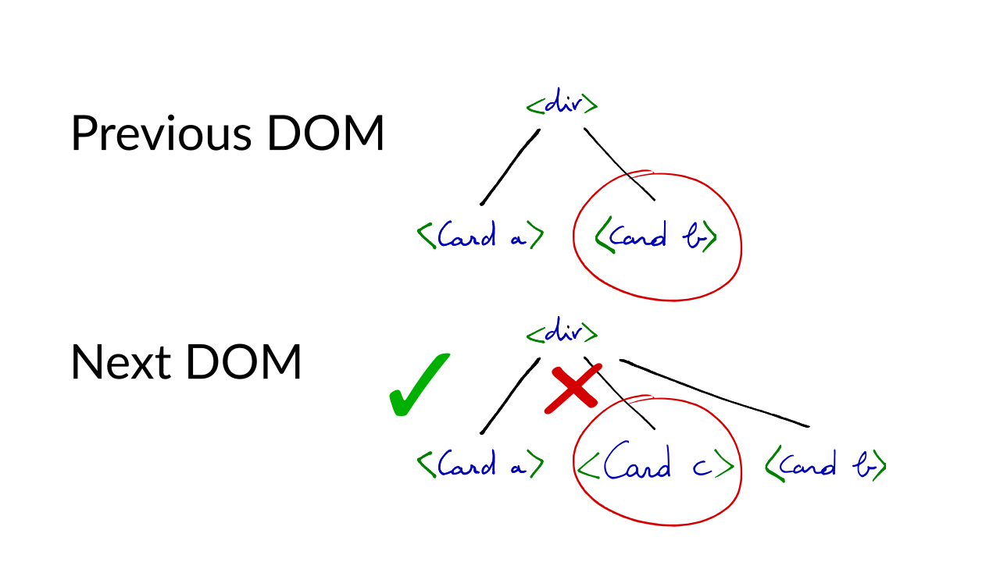

app-state -> DOM(defn comment [c]
[:div
"Comment by " (:author c)
[:div.body (:body c)]])
(defn comment-list [cs]
[:div
[:h3 "Comments"]
(for [c cs]
[comment c])])
A component is a function
It receives properties
It returns an element
[:div {:class "comment-list"}
[:h3 "Comments"]
[comment {:author ,,, :body ,,,}]
[comment {:author ,,, :body ,,,}]
An element has a type, which is either a HTML tag, or a component
It takes properties and children
Properties and children either correspond with DOM properties and children
[:div {:class "foo"} "Hello"]
Or serve as arguments to the component
[comment {:author "Arne" :body "Reactive!"}]
[:a {:on-click #(do-something %)}
"do something"]
Each state change results in new DOM
Naive approach: on each change recreate the DOM
But… lots of things are attached to the DOM
Changing the DOM makes browsers do work
Solution: use a “fake” DOM
Made of plain JS objects
Lightweight, easy to create and discard
No strings browser attached
Changes still need to make it to the “real” DOM
This is known as “reconciliation”
diff -u browser.dom virtual.dom
Results in a set of “updates” which are “flushed” to the DOM
Full tree diff is expensive, O(n^3), not an option
Can we get a “good enough” diff?
Assume nodes never move to a different parent
Do a single pass, top-to-bottom, left-to-right: O(n)
Trades off speed of diffing vs. minimal change set
Skip components of different types
[:div [:h3 "foo"]
[comment-list]]
[:div [:h3 "bar"]
[menu-bar]]
;;=>
[(change "foo" "bar")
(remove comment-list)
(add menu-bar)]
Force the programmer to add a unique key to siblings
Detect sibling moves based on key
(defn comment-list [cs]
[:div.comment-list
[:h3 "Comments"]
(for [c cs]
[comment c])])
(defn comment-list [cs]
[:div.comment-list
[:h3 "Comments"]
(for [c cs]
^{:key (:id c)} [comment c])])




Replacing DOM nodes means removing and re-creating event handlers
Instead register global handlers
Implement own “synthetic” event system
Look up parent by simple string manipulation
<div class="comments" data-reactid=".0">
<div class="comment" data-reactid=".0.0:0">
<div class="header" data-reactid=".0.0:0.0">
...
</div>
<div class="body" data-reactid=".0.0:0.1">
<div data-reactid=".0.0:0.1.0">
<p data-reactid=".0.0:0.1.0.0">
...
</p>
</div>
</div>
</div>
</div>
Components should only update when properties change
If props are JS objects: expensive to compare
Comparing Functional Data Structures: instantaneous
Reagent, Om, implement shouldComponentUpdate to achieve this
(fn shouldComponentUpdate [nextprops nextstate]
(this-as c
(let [old-argv (.. c -props -argv)
new-argv (.. nextprops -argv)]
(not= old-argv new-argv))))
Reagent tracks which components make use of which reagent/atom
Result: when state changes it knows immediately which are “dirty”
Instead of rendering the whole tree, render only the “dirty” components with forceUpdate
(def a (reagent/atom "I'm x"))
(def b (reagent/atom "I'm y"))
(def x []
[:div @a])
(def y []
[:div @b])
(swap! a (constantly "Even more x"))
App state may change several times in a short time
No need to update the UI quicker than the browser can handle
Reagent batches dirty components and flushes them all in a requestAnimationFrame
Apps typically use one atom containing app state
Many components will reference this atom
If state changes, all components are re-rendered
Solution: Reactive signal graph.
(reg-sub :todos (fn [db _]
(:todos db)))
(reg-sub :todos-count :<- [:todos]
(fn [todos _]
(count todos)))
(reg-sub :completed-count :<- [:todos]
,,,)
(reg-sub :footer-counts :<- [:todos-count]
:<- [:completed-count]
(fn [[count completed] _]
[(- count completed) completed]))
React is working on a new Reconciliation algorithm called “Fiber”.
MOAR HACKS are on the way!